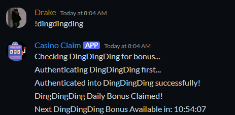

Pentesting with Selenium WebDriver
Introduction
Selenium combined with chromium is a powerful tool for pentesting web applications. In this post, we will explore how to use Selenium WebDriver with a custom chromium instance to scrape data and execute desired actions. NOTE: This post is for educational purposes only. Always follow the terms of service. 😇
Background
For this post, we will be looking at some code I wrote for pentesting dingdingding.com, a social casino website that offers a daily bonus to its users. The code authenticates in to the website, collects the daily bonus, and provides a countdown for the next. The full code is available here.
Authentication
This is the first step to access the website and complete actions. This is also the most challenging step, as we have to get past a 2Captcha challenge. The code below uses selenium for clicking the elements and sending the credentials needed to authenticate. You may be wondering why there is an 80 second asyncio.sleep statement at the beginning. This is because the we need our chrome extension to solve the 2captcha. To load the extension into the browser, we copy the .crx to a temp directory in the Dockerfile.
# Copy the .crx file to a temporary directory
COPY ./CAPTCHA-Solver-auto-hCAPTCHA-reCAPTCHA-freely-Chrome-Web-Store.crx /temp/CAPTCHA-Solver-auto-hCAPTCHA-reCAPTCHA-freely-Chrome-Web-Store.crx
This chrome extension uses “AI” to solve the captcha. I am fully aware that there are alternatives to solving 2captcha, but they rely on manual human labor at rates that are exploitative.
# Function to authenticate into DingDingDing
async def authenticate_dingdingding(driver, bot, ctx):
global authenticated
try:
web = "https://www.dingdingding.com/login"
driver.get(web)
await asyncio.sleep(80)
# Wait for email and password fields, enter credentials from environment variables
email_field = WebDriverWait(driver, 30).until(
EC.presence_of_element_located((By.XPATH, "/html/body/div[1]/div/div/div[1]/div[1]/div/div/div[2]/form/input[1]"))
)
email_field.send_keys(os.getenv("DINGDINGDING").split(":")[0])
password_field = WebDriverWait(driver, 30).until(
EC.presence_of_element_located((By.XPATH, "/html/body/div[1]/div/div/div[1]/div[1]/div/div/div[2]/form/input[2]"))
)
password_field.send_keys(os.getenv("DINGDINGDING").split(":")[1])
await asyncio.sleep(3)
try:
# Click login button
login_btn = WebDriverWait(driver, 10).until(
EC.element_to_be_clickable((By.XPATH, "/html/body/div[1]/div/div/div[1]/div[1]/div/div/div[2]/form/button[2]"))
)
login_btn.click()
except:
await ctx.send("Unable to solve captcha. Try again later.")
return False
await asyncio.sleep(5)
# Check if login was successful
if driver.current_url == "https://dingdingding.com/lobby/":
await ctx.send("Authenticated into DingDingDing successfully!")
authenticated = True
else:
await ctx.send("Authentication failed. Did not reach the lobby.")
authenticated = False
except TimeoutException:
authenticated = False
await ctx.send("Authentication timeout. Please check your credentials or XPaths.")
return False
return True
We know our authentication was successful if we are redirected to the lobby. If we are not redirected, we will send a message to the user that the authentication failed. The way that this is implemented is by checking the current URL of the driver. If the current URL is the lobby, we know that we have successfully authenticated. The flag authenticated is set to true so when the bot is running by itself, it can check if it is authenticated to proceed.
Collecting Bonus and Countdown
To claim the bonus, we just use simple webdriver methods to find and click the buttons by CSS selectors and XPATHS. Using await ctx.send() is to send a message to discord. For the countdown timer, we use the .zfill method to format the time to be in the format HH:MM:SS.
# Function to claim DingDingDing daily bonus
async def claim_dingdingding_bonus(driver, ctx):
try:
# Click the bonus button in the lobby
bonus_button = WebDriverWait(driver, 10).until(
EC.element_to_be_clickable((By.CSS_SELECTOR, "#__nuxt > div > div:nth-child(1) > aside.sidenav > div.sidenav__cont > div > div.sidenav__actions > button.btn.btn--nav.btn--rewards > span.btn__label"))
)
bonus_button.click()
print("DingDingDing Daily Bonus Button Found!")
# Click the collect button
collect_button = WebDriverWait(driver, 10).until(
EC.element_to_be_clickable((By.XPATH, "/html/body/div[1]/div/div[1]/div[6]/div/div[2]/div/div/button[2]"))
)
collect_button.click()
await ctx.send("DingDingDing Daily Bonus Claimed!")
except TimeoutException:
print("COLLECT button not found! Check XPATH of claim button!")
return False
return True
# Function to check the countdown for the next bonus
async def check_dingdingding_countdown(driver, ctx):
try:
# Retrieve countdown elements
hours_element = WebDriverWait(driver, 10).until(
EC.presence_of_element_located((By.XPATH, "/html/body/div[1]/div/div[1]/div[6]/div/div[2]/div/div/div/span/div[1]/span"))
)
minutes_element = WebDriverWait(driver, 10).until(
EC.presence_of_element_located((By.XPATH, "/html/body/div[1]/div/div[1]/div[6]/div/div[2]/div/div/div/span/div[2]"))
)
seconds_element = WebDriverWait(driver, 10).until(
EC.presence_of_element_located((By.XPATH, "/html/body/div[1]/div/div[1]/div[6]/div/div[2]/div/div/div/span/div[3]"))
)
# Format countdown time
countdown_message = f"Next DingDingDing Bonus Available in: {hours_element.text.zfill(2)}:{minutes_element.text.zfill(2)}:{seconds_element.text.zfill(2)}"
await ctx.send(countdown_message)
except TimeoutException:
await ctx.send("Failed to retrieve DingDingDing countdown timer.")
return False
return True

Conclusion
That’s it! We have successfully authenticated into DingDingDing, claimed the daily bonus, and checked the countdown for the next bonus. The image above is what it looks like when invoked with a command for the discord bot. This is only a small example of what you can do with Selenium WebDriver combined with docker and chromium.